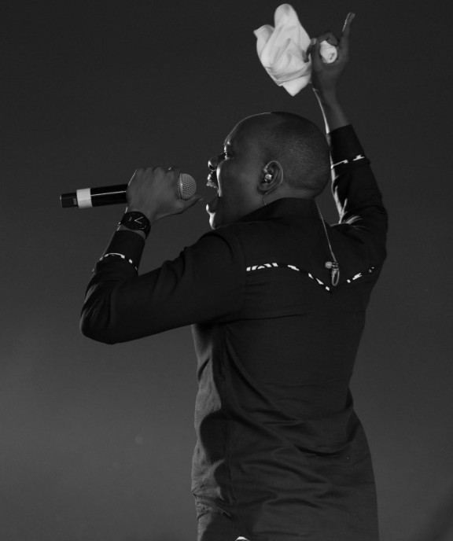

Artiste gospel burundais connu principalement pour ses chansons exaltantes et rempli d'emotions.

Pastor Lopez Ninahazwe est un artiste musicien burundais connu pour sa musique chretienne inspirante et ses messages de foi et d'espoir. Originaire du Burundi, il s'est impose comme l'une des voix les plus marquantes de la musique gospel burundaise, touchant des milliers de personnes a travers ses chansons. Ses oeuvres connus notamment comme le concert akandi karyo, paru pour sa deuxieme fois le fait distinguer parmi les autres artistes burundais sur la scene musicale du Burundi.